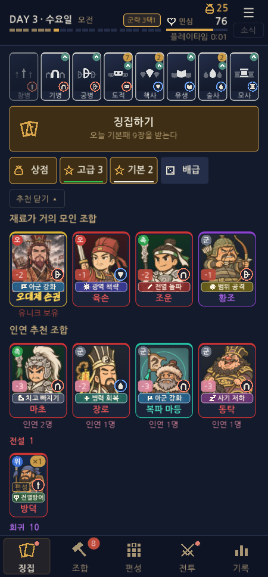
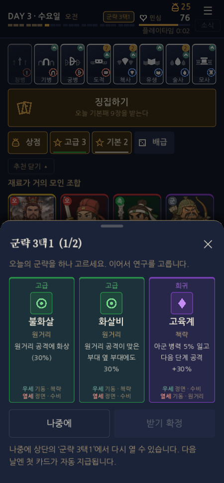
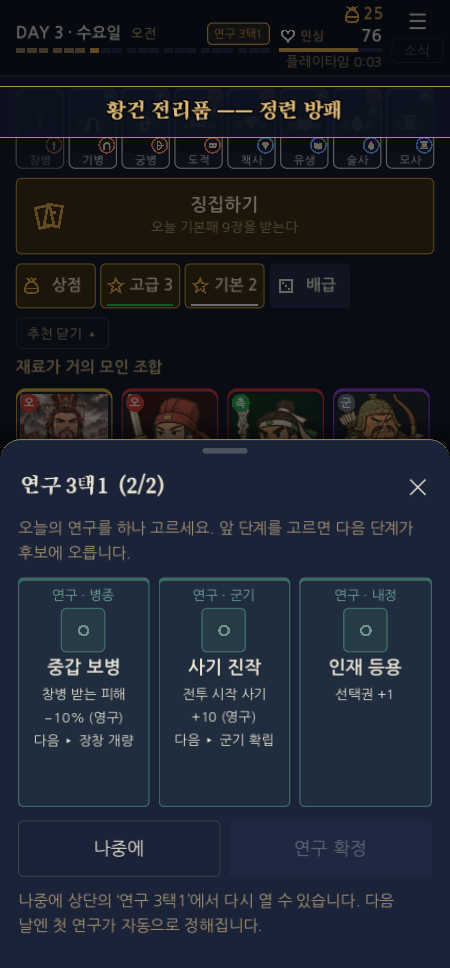
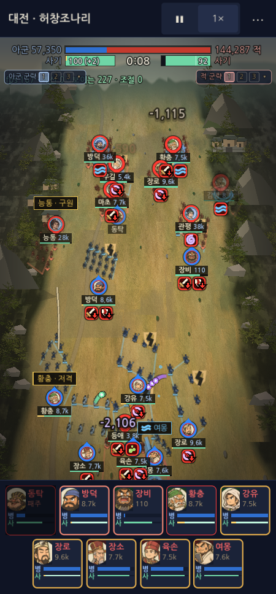
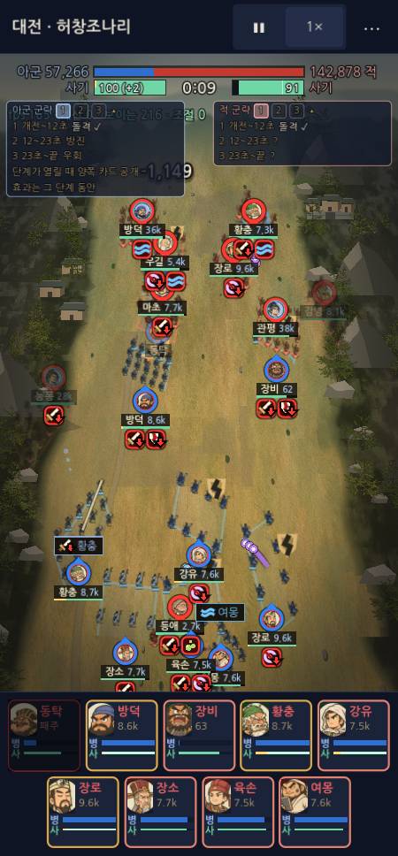
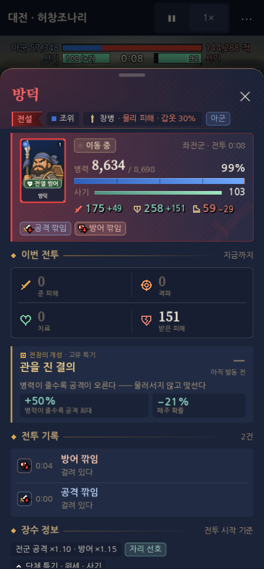
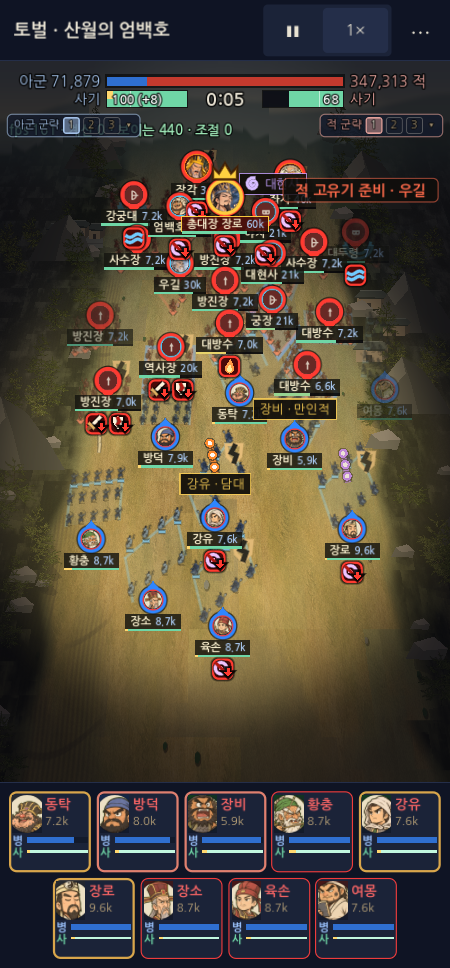
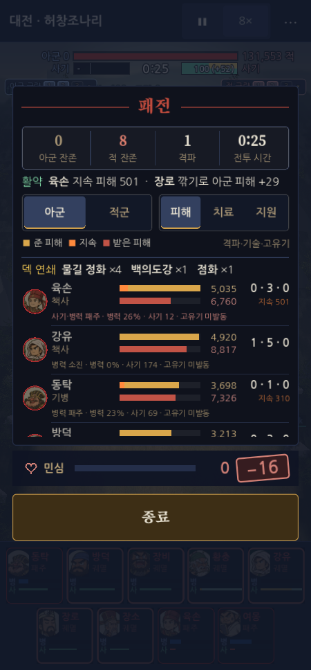

솔국지 현황 보고 — 2026-11-22 (하루 마감)
다른 AI 모델 · 다른 작업자에게 넘기는 문서. 이 문서 하나로 한 판의 흐름 · 화면 · 시스템 · 오늘(1.2e) 변경 · 약점을 파악할 수 있게 썼다. 앞 문서: docs/현황_1120.html (게임 구조 · 온라인 · 부록 파일 지도는 거기와 같다 —— 여기서는 바뀐 것 위주). 출처: data/changelog.json 1.2e, docs/밸런스_1122.md, git log --since=2026-11-22. 스크린샷은 점검 인자로 찍은 실제 게임 화면(450×968, Mobile 렌더러, 시드 7).
1. 한눈에
솔국지는 Godot 4.4.1 로 만든 세로 화면 삼국지 카드 오토배틀러다(안드로이드 APK · PC EXE). 아침에 카드를 받고(징집) · 모아 한 등급 위로 올리고(조합) · 진형에 편성하고 · 군략 · 연구를 고르면, 전투는 자동 · 실시간으로 진행되고 사람은 구경한다. 민심이 0 이 되면 멸망, 최후의 한 세력이 남을 때까지 날이 이어진다. 혼자 하기(봇)와 온라인(4 · 6 · 8명 방, 빈자리 봇)이 있고, 기준은 온라인 대전이다.
| 항목 | 지금 |
|---|---|
| 버전 | 1.2e (code 47, 11/22) —— 「매복과 기습 · 군략과 연구」. APK · EXE 1.2e 빌드 커밋 5015bcb |
| 11/20 이후 | 1.1h → 1.1i · 1.1j · 1.1k (11/20) → 1.2a~1.2d (11/21) → 1.2e (11/22) |
| 전투 화면 | 전쟁 삽화 방식만. 오늘부터 전장 좌우에 숲 · 바위 매복 띠 |
| 전투 속도 규칙 | 속도 100 = 초당 1번 공격 (1.1h). 오늘 판 평균 등급별 피해 배율(Battle.len_dmg)로 높은 등급 전투를 늘였다 |
| 아침 고르기 | 군략 3택1 → 연구 3택1 (오늘 새로, 두 트리) |
2. 한 판의 흐름 · 아침 화면
- 하루 = 오전 · 오후 · 저녁 3페이즈(
Run.PHASE_N). 머리띠에 「DAY 3 · 수요일 오전」, 민심 게이지, 군량. - 아침마다 군략 3장(연구 「군략 연구」가 있으면 4장) 중 하나 → 이어서 연구 3장 중 하나. 고르지 않으면 하루 끝에 첫 카드가 자동 지급(
Run.tk_day_end). 머리띠의 「군략 3택1」 · 「연구 3택1」 칩으로 다시 연다. - 지면 민심이 깎인다(패배 피해는 날이 갈수록 커짐). 보상은 이기든 지든 같다.



3. 전투 화면
- 구조: 결정적 엔진(
battle.gd·rt_battle.gd·sig_rt.gd)이 끝까지 미리 계산, 화면(battle_view.gd·war_painting)은 재생만. 온라인은 서버가 계산. 전투 중 개입 없음. - 위 띠: 양군 병력 · 시간 · 사기(100 초과는 "100 (+2)"). 바로 아래 아군 군략 · 적 군략 칩(1 · 2 · 3단계, 접기/펼치기, 발동 ✓ · 무효 ✕). 단계: 1 = 개전~12초 · 2 = 12~23초 · 3 = 23초~끝.
- 매복 지형: 전장 좌우가 숲 · 바위 띠. 그 안을 지나는 우회 · 매복 부대는 흐리게 보이다가 「기습!」과 함께 나타남(화면 전용, 판정과 무관). 우회 중 이동 속도 ×1.8(
RtBattle.flank_spd, 판정 변경). - 상태 딱지: 버프 초록 · 디버프 빨강 테두리 둥근 네모, 능력치 기호 + 큰 ↑↓, 크기 19, 넷 넘치면 +N.
- 아래: 장수 카드(병력 "8.7k", 병 · 사 막대). 누르면 전투 장수창.





4. 핵심 시스템 —— 오늘 바뀐 것
| 시스템 | 내용 |
|---|---|
| 군략 · 연구 두 트리 | 예전엔 3택1 = 군략 2장 + 능력치 · 경제 1장. 지금은 군략 3택1(전투 카드) → 연구 3택1(능력치 · 경제는 모두 연구로). 연구는 앞 단계를 고르면 다음 단계가 후보에 오른다(Tac.res_offer · Run.rs_done). 효과 길은 예전 능력치 · 경제 카드와 같음(_tk_econ). 코드 efd1c36 · scripts/ui/tac_ui.gd |
| 전투 길이 | Battle.len_dmg {4:.75, 5:.5, 6:.55, 7:.4, 8:.45} —— 판 평균 등급으로 직접 피해 · 지속 피해 · 치료 · 재생에 같은 배율(고급 1). 불멸 9장 중앙값 27.5 → 41.8초 · 신화 9장 30.3 → 44.7초 (tests/battle_len 40판) |
| 고유기 굶주림 보장 | 기가 차고 대기가 끝난 뒤 6초 넘게 못 쓴 장수는 기질 조건 면제 + 줄 맨 앞. data/ultimates.json 에 장수별 wind(기 모으기, 공통 2.5 · 속공 6명 1.5~1.8) · wait(기습 6명 6~7초) |
| 특별한 특기 | 등애 음평 착지 기습 + 장료 합비 돌파 · 조운 장판 구출 · 장비 장판교 호령 · 황개 고육계 · 태사자 포위 돌파 · 조조 할수기포 · 전위 호위 (sig_rt.gd, 892beed) |
| 4인 연쇄 | 인연 4인 연쇄 피해 ×0.8 (yeon_n4_amp, 측정 도구 tests/chain_power) |
| 토벌 총대장 | 병사 인형 1.7배 · 큰 메달 · 금테 · 왕관 · 「총대장」 이름표, 받는 피해 −25% |
| 봇 덱 | 등급 계단 · 인연 고려 (후반 봇이 초월 9장뿐이던 것, 9c3854b) |
| 금색 특기 등급 역전 | 금색 단체 특기의 고정값 키(사기 · 적 시작 사기)는 축 등급 배율 · 신화 배율 대신 레벨표만 (59c6e08) —— 장료 위진 8급 8.0 → 17.7 등 |
5. 오늘(11/22) 변경 요약 —— 1.2e
| 갈래 | 내용 | 커밋 |
|---|---|---|
| 전투 | 높은 등급 전투 길게(불멸 · 신화 보통 30초 넘김) · 우회 이동 ×1.8 | e8e7b69 |
| 전투 | 고유기 굶주림 보장 · 장수별 wind/wait | 312a268 |
| 전투 | 특별한 특기 7종 + 등애 음평 | 892beed |
| 전투 | 4인 연쇄 ×0.8 | ebe0537 |
| 전투 | 토벌 총대장 크게 · 받는 피해 −25% | 704804d |
| 화면 | 삽화 전장 매복 지형(좌우 숲 · 바위) · 우회 · 매복 부대 그늘 · 「기습!」 | d1ee267 |
| 화면 | 상태 딱지 새 단장(초록 · 빨강, ↑↓, 크기 15 → 19, +N) | 52e3cc4 |
| 화면 | 전투 장수창: 공방속을 병력 · 사기 아래로, 실시간 값 | b140bc3 |
| 화면 | 전투 결과창 정리(승패 제목 · 요약 칸 · 범례 · 구분선) | 8fc847d |
| 화면 | 선택권 10 넘으면 「1」 로 잘리던 것 | b6a1e85 |
| 군략 | 군략 3택1 → 연구 3택1 두 트리 | efd1c36 |
| 군략 | 단계 시각 설명 · 전투 HUD 양쪽 군략 목록 | c3cf22a |
| 균형 | 봇 덱 등급 계단 · 인연 | 9c3854b |
| 균형 | 금색 특기 등급 역전 · card_adjust 40장 · 병종 stat_adjust 9칸 · 유비 레벨표 | 59c6e08 · 5b5d294 · bb34eeb |
| 배포 | 버전 1.2e 변경 내역 · APK · EXE 빌드 | 6c90814 · 5015bcb |
11/20~21 판 제목: 1.1i~1.1k 화면 다듬기 · 1.2a 전장의 개성(장수마다 다른 전투 행동) · 1.2b 배속 · 사운드 · 1.2c 유니크 확인 · 세력 화면 · 1.2d 장수창 새 단장 · 관전 · 온라인 지연.
6. 밸런스 · 측정 (docs/밸런스_1122.md)
| 항목 | 전 (시드 11·12) | 후 (새 시드 13, 판 수 절반) |
|---|---|---|
| 카드 β σ 고급/희귀/전설/초월/불멸/신화/기인 | 4.5/5.5/6.5/7.1/5.9/8.3/8.3 | 4.9/5.4/6.2/7.0/5.0/8.1/8.0 |
| |β|>12 카드 수 | 11 | 7 |
| 등급 격차 (위 9 대 아래 9, 40판) | — | 4>3 100 · 5>4 100 · 6>5 100 · 7>6 97.5 · 8>7 100 % (유지) |
- card_adjust 1회 40장 (|β|>8 을 8 쪽으로 ±5%p): 전설 조운 +14.4 → −0.5 · 불멸 손권 +11.7 → +2.6 · 불멸 육손 −10.6 → +2.1 · 신화 감녕 +15.3 → +13.0 등.
- 병종 stat_adjust 1회 9칸 (mix 시드 1120). 손질 뒤 병종 재측정은 안 함.
- 시드 13 은 판 수 절반이라 카드 β 오차 약 2.5~3 (시드 11·12 평균은 약 1.6).
- 점검: determinism 30판 · tac_check · ctl_check 40개 실패 0.
7. 약점 · 남은 문제
밸런스 잔여
전투 길이 · 고유기
len_dmg 로 중앙값은 40초대가 됐지만 꼬리는 짧다(스크린샷 08 의 대전도 0:25 에 끝남). 군략 3단계(23초~) 가 열리기도 전에 끝나는 판이 있다.len_dmg)이 토벌에도 걸려 토벌도 길어졌다. 총대장 받는 피해 −25% 와 겹쳐 난도가 어떻게 바뀌었는지 모름(tests/diff_probe --mode=quest).화면
8. 다른 모델에게 묻고 싶은 것
- 짧은 판 꼬리(하위 10% 25초)를 줄이는 손잡이: 판 평균 등급 대신 "남은 병력 비"에 따른 피해 배율? 개전 몇 초 피해 감소? 사기 붕괴 완화?
- 고유기 35% 미사용 —— 전역 간격을 진영별로 나눌까, 고유기 줄을 등급 · 기다린 시간 가중치로 바꿀까?
- card_adjust 한계에 걸린 카드(장비 · 유비 · 조조)는 특기 수치를 직접 고칠지, 한계를 넓힐지?
- 연구 트리 —— 능력치 · 경제가 연구로 빠지며 군략 3택1 은 전투 카드만 남았다. 연구 갈래 수 · 단계 깊이가 7일 판에 맞나?
- 전투 HUD 군략 목록: 펼침이 전장을 가리지 않게 할 자리(위 띠 안 · 아래 장수 카드 위 · 꾹 눌러 보기)?
9. 부록 —— 스크린샷 찍기
cd solgukji_godot && ../tools/Godot_v4.4.1-stable_win64_console.exe --path . --rendering-method mobile --resolution 450x968 --position 2000,100 -- --gnew=7 --gplay=15 --gbattle=pvp --gshot=out.png --after=9
- 이 문서: 01
--gplay=6 --gpage=draw --gquiet· 02--gsheet=tacoffer --gnoband· 04--gbattle=pvp --after=9· 06--gunit=A1 --after=6· 07--gbattle=quest --after=6· 08--gbattle=pvp --speed=8 --after=20(모두--gnew=7). - 03 연구 3택1 · 05 군략 목록 펼침은 점검 인자가 없어 바깥 도우미 스크립트(
-s, SceneTree 에서 game.tscn 을 띄운 뒤act("pick_tac")→TacUI.res_sheet/_battle._tac_list.open = true)로 찍었다. 주의:-s스크립트에서GameScreen처럼 오토로드에 기대는 class_name 을 형으로 쓰면 컴파일이 깨진다(스크립트 경로로 찾을 것). 필요하면--gsheet=resoffer·--gtacopen점검 인자를 게임에 더하는 것이 낫다. - 점검 인자가 있으면 사용자 저장을 쓰지 않는다(
Run.dev_nosave).
이 문서의 스크린샷: docs/report_1122/ 8장. 수치는 출처 문서 · 커밋 메시지의 측정값.